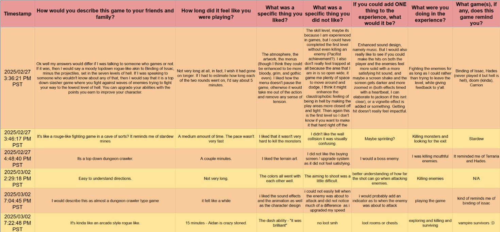
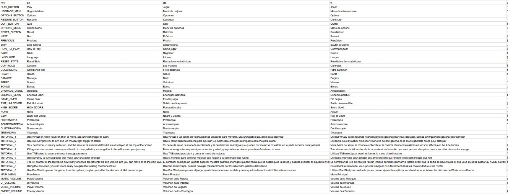

Cast In Flame
Description
Cast Into Flame is a project I contributed to for a 10 week course at UCSC. Myself and five friends came together and created a top-down hack and slash inspired by Dante's Inferno. I was the Playtesting Lead but was also responsible for recording the voice work and localization for the game.
Playtesting
For this project, we performed several rounds of playtesting. We all had facilitated playtesting for projects before, but nothing as in-depth as these playtest sessions. Being the Playtesting Lead, I was responsible for creating forms for the playtests that the players could respond to. We held playtest sessions every other week for two months. This helped us keep the development moving and gave us a good understanding of what to tackle next. The forms for the players were different every playtest session. I changed them after meeting with the team to see what aspects of the game they wanted to prioritize feedback on. I then compiled the responses from the players and created a list of action items that we used for the next development cycle. Playtest sessions were held both in-person and virtually. We used both Zoom and Discord for the virtual sessions. The in-person sessions proved more effective because players were more inclined to give verbal feedback in addition to filling out the forms. In all sessions, we made sure there was at least one other person observing and taking notes. That way we were able to get the most out of playtesting.

Technical
We decided to use Godot to create our game. The game was mostly programmed in GDScript. I contributed with the voice acting and localization. I recorded the voice work myself with Audacity and sent them to Jack, who formatted and edited them to fit the aesthetic of our game better. For the localization, Godot has a feature that allows you to create keys. These keys can be mapped to phrases in a spreadsheet, which you then convert to a CSV file and import into Godot. Each of the keys is automatically mapped to the phrases of the specific language you have selected.

Reflection
This project was very fun to work on. I learned a lot about working in a studio environment. I was very lucky to have such amazing team members. We all contributed to the project in different ways but were also able to come together when it came to ideation. Letting everyone voice their ideas about the game is something unique to the studio environment we cultivated and I am grateful that I was able to experience it and learn new things from others.